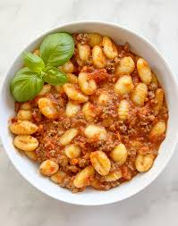

Gnocchi Recipe

Description
Gnocchi (singular gnocco) are Italian dumplings made with flour, eggs, and potatoes. Gnocchi can be served in tomato sauce, tossed with pesto, or sautéed with butter and herbs.
Ingredients
Steps
- Boil and drain the potatoes, then mash or pass through a ricer.
- Combine the ingredients, then knead into a ball.
- Divide the dough into four even portions and shape into "snakes."
- Cut the snakes into pieces.
- Boil and drain the gnocchi.
Home